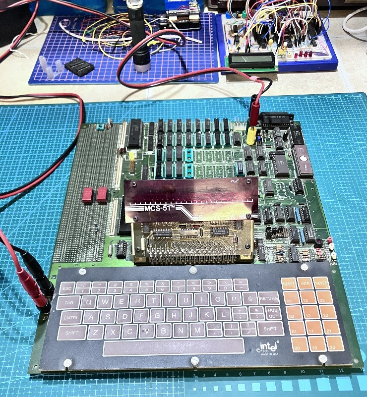
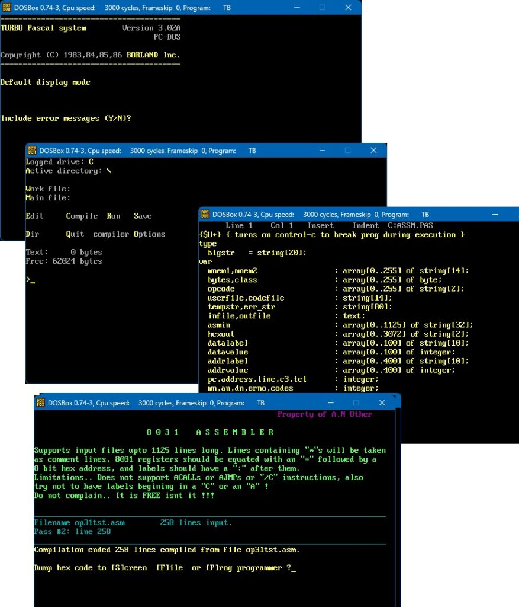

After my recent trip to the UK, my friend Tony, who I worked with as a electronics technician in Q4 division at GCHQ from 1984 to 1989, sent me an email. Apparently in the late nineties, a few years after I left, he was rummaging through some items awaiting disposal when he spotted something familiar, and, being a bit of a retro nerd, quietly appropriated it. So what you may ask is it?

Well this my friends was an 8051 developers board; Part of the extremely expensive Intel 8031/8051 developers kit, which several of the GCHQ development (M Division) departments used back in the day. This kit usually included an in-circuit emulator (ICE), some sort of flash programmer, a wad of thick manuals, and the complete software package for VAX/VMS (The OS of champions back in the day!). The Intel 8031 was basically an 8051 without flash or EPROM and a lot less expensive, it was usually paired with something like an 8755 EPROM/IO.
Now in the early 80’s adding any type of smarts to your electronics project was not quite as simple as connecting a $2 board and running up an Arduino IDE; Back then the world was mostly focussed on micro-computers such as the Z80, 680x, 650x, etc, which required all the associated RAM/ROM and IO to make them work. Micro-controllers were there but hidden from the normal hobbyists, and used mainly in industrial applications. The first microcontroller I was exposed to was the 8031, and like many things, once I got used to it, I just stuck with it. The 8051 is still used today.
An 8051 in the mid-80’s cost about US$40 (US$90 in 2025 money), though that was not the end of it, back then you also had to buy or pirate the assembler or compiler software, and, to put the proverbial nail in the coffin, buy or have access to an EPROM programmer. As a twenty year old junior technician I was always wanting to build things, but I was also perpetually broke, had to pay rent, run my car, eat and drink too, so forking out mega-bucks for the above was never going to happen. Luckily I worked at GCHQ!
There is a bit of a little known fact about GCHQ (and I guess all military/NATO organisations should be included here) and that is a lowly junior electronic technician back then could simply write out a chit, with a NATO stock number on it for almost any electronics part, and it would magically appear the same or the next day; With almost no questions asked! Also as an electronics technician, when we weren’t repairing or servicing computers (which was most of the time) we had very little to do.
Being in a maintenance department we did not have the full development kit, nor a spare VAX in the office to run it on (We fixed mostly DEC PDP 11/70s and peripherals). What we did have though was a PC/XT, a EPROM blower, wads of time, and an almost infinite supply of components! Coding back then for a poor hobbyist meant getting the data book, writing out all the op codes by hand, typing the resultant hexadecimal into a file and sending it to the EPROM blower to write the 8051 or 8755! But yours truly also had a secret weapon, TURBO PASCAL!
Writing an assembler was simply substituting 8051 assembly mnemonics for there hexadecimal equivalent, and remembering a few labels so you could add in the appropriate memory locations, registers and jumps, it certainly wasn’t rocket science. That is exactly what 1984 Boz thought and so he wrote one.
I am pretty sure this was one of my very first Pascal programs, as I started using Turbo Pascal 1.0 in September 1984 after another guy Mark loaded his copy on the work PC and showed me it. I also used the newly written assembler to program my home built 8031 based central heating controller which would have been Christmas that same year. The big surprise from Tony’s email was that he had kept a copy of that assembler program, as he was going to use it to determine how to write a Z80 one. More importantly, he also kept a copy of it’s turbo pascal source code. The really big surprise is that in 2025 it all still works!
The code is laughable (from the perspective of 2025 Boz), but I had to remember that back then Turbo Pascal compiled to the old COM style executable, not the EXE, and so code and data had to fit into a 64KB memory segment. I had never done any formal programming courses, had never used an assembler, nor had any idea how an assembler worked until I decided to build one. So I basically guessed how to do it, assuming I could define registers or memory addresses with labels, and use labels for jumps, just like hand written stuff. What a trip down memory lane..

The 660 lines of pascal I wrote also included an interface to the EPROM programmer we used at the time, and all compiled to a 24KB executable! As you can see from the program comment it was seriously limited (having only 26KB free for data), but you also have to remember, the 8051 had only 2KB of memory and 128 bytes of RAM back then! Luxury!
I have attached the whole project zip, which you can download directly from this site. This 55KB zip file not only contains the assembler pascal source code and executable file but also the whole turbo pascal 3.02 IDE. (Turbo Pascal 3 was made free back in 2002) Everything runs fine on the date of this post on the latest DOSBox
Remember this was 1984 and young Boz had never seen a proper assembler, I hand-coded stuff from listings in computer magazines, and the made-up syntax of the source file was probably influenced from my exposure previously to BASIC programming. The assembly file below contained all the supported op codes to test the program worked properly.
DATA=$AA
PSW=50
RGR21=20
BITST=$50
RGR20=$20
TEST=255
ORG $0000
START: ADD A,R0
ADD A,R1
ADD A,R2
ADD A,R3
ADD A,R4
ADD A,R5
ADD A,R6
ADD A,R7
ADD A,#DATA
ADD A,@R0
ADD A,@R1
ADD A,RGR20
ADDC A,R0
ADDC A,R1
ADDC A,R2
ADDC A,R3
ADDC A,R4
ADDC A,R5
ADDC A,R6
ADDC A,R7
ADDC A,#50
ADDC A,@R0
ADDC A,@R1
ADDC A,RGR20
ANL A,R0
ANL A,R1
ANL A,R2
ANL A,R3
ANL A,R4
ANL A,R5
ANL A,R6
ANL A,R7
ANL A,@R0
ANL A,@R1
ANL A,#TEST
ANL RGR20,#TEST
ANL RGR20,A
ANL A,RGR20
ANL C,RGR20
CJNE A,#TEST,START
CJNE A,RGR20,START
CJNE R0,#TEST,START
CJNE R1,#TEST,START
CJNE R2,#TEST,START
CJNE R3,#TEST,START
CJNE R4,#TEST,START
CJNE R5,#TEST,START
CJNE R5,#TEST,START
CJNE R6,#TEST,START
CJNE R7,#TEST,START
CJNE @R0,#TEST,START
CJNE @R1,#TEST,START
CLR A
CLR C
CLR RGR20
CPL A
CPL C
CPL RGR20
DA A
DEC A
DEC R0
DEC R1
DEC R2
DEC R3
DEC R4
DEC R5
DEC R6
DEC R7
DEC @R0
DEC @R1
DEC RGR20
DIV AB
LL1: DJNZ R0,LL1
DJNZ R1,LL1
DJNZ R2,LL1
DJNZ R3,LL1
DJNZ R4,LL1
DJNZ R5,LL1
DJNZ R6,LL1
DJNZ R7,LL1
DJNZ RGR20,LL1
INC A
INC DPTR
INC R0
INC R1
INC R2
INC R3
INC R4
INC R5
INC R6
INC R7
INC @R0
INC @R1
INC RGR20
JBC BITST,LL1
JZ LL1
JB BITST,LL1
JC LL1
JMP @A+DPTR
JNB BITST,LL1
JNC LL1
JNZ LL1
LCALL SUBRT
LJMP LL1
MOV DPTR,#$AAAA
MOVC A,@A+DPTR
MOVC A,@A+PC
MOVX @DPTR,A
MOVX A,@R0
MOVX A,@R1
MOVX @R0,A
MOVX @R1,A
MOV A,R0
MOV A,R1
MOV A,R2
MOV A,R3
MOV A,R4
MOV A,R5
MOV A,R6
MOV A,R7
MOV A,@R0
MOV A,@R1
MOV R0,A
MOV R1,A
MOV R2,A
MOV R3,A
MOV R4,A
MOV R5,A
MOV R6,A
MOV R7,A
MOV R0,#TEST
MOV R1,#TEST
MOV R2,#TEST
MOV R3,#TEST
MOV R4,#TEST
MOV R5,#TEST
MOV R6,#TEST
MOV R7,#TEST
MOV R0,RGR20
MOV R1,RGR20
MOV R2,RGR20
MOV R3,RGR20
MOV R4,RGR20
MOV R5,RGR20
MOV R6,RGR20
MOV R7,RGR20
MOV @R0,A
MOV @R1,A
MOV @R0,#TEST
MOV @R1,#TEST
MOV @R0,RGR20
MOV @R1,RGR20
MOV A,#TEST
MOV A,RGR20
MOV RGR20,#TEST
MOV RGR20,A
MOV RGR20,R0
MOV RGR20,R1
MOV RGR20,R2
MOV RGR20,R3
MOV RGR20,R4
MOV RGR20,R5
MOV RGR20,R6
MOV RGR20,R7
MOV RGR20,@R0
MOV RGR20,@R1
MOV C,BITST
MOV BITST,C
MOV RGR20,RGR21
MUL AB
NOP
ORL A,R0
ORL A,R1
ORL A,R2
ORL A,R3
ORL A,R4
ORL A,R5
ORL A,R6
ORL A,R7
ORL A,@R0
ORL A'@R1
ORL A,#TEST
ORL A,RGR20
ORL RGR20,#TEST
ORL RGR20,A
ORL C,BITST
SUBRT: POP PSW
PUSH PSW
RETI
XRL A,R0
XRL A,R1
XRL A,R2
XRL A,R3
XRL A,R4
XRL A,R5
XRL A,R6
XRL A,R7
XRL A,@R0
XRL A,@R1
XRL A,#TEST
XRL A,RGR20
XRL RGR21,A
XRL RGR20,#TEST
RET
RL A
RLC A
RR A
RRC A
SETB C
SETB BITST
SJMP HERE
HERE: SUBB A,R0
SUBB A,R1
SUBB A,R2
SUBB A,R3
SUBB A,R4
SUBB A,R4
SUBB A,R5
SUBB A,R6
SUBB A,R7
SUBB A,@R0
SUBB A,@R1
SUBB A,#TEST
SUBB A,RGR20
SWAP A
XCH A,R0
XCH A,R1
XCH A,R2
XCH A,R3
XCH A,R4
XCH A,R5
XCH A,R6
XCH A,R7
XCH A,@R0
XCH A,@R1
XCH A,RGR20
XCHD A,@R0
XCHD A,@R1
XRL A,R0
XRL A,R1
XRL A,R2
XRL A,R3
XRL A,R4
XRL A,R5
XRL A,R6
XRL A,R7
XRL A,@R0
XRL A,@R1
XRL A,#TEST
XRL A,RGR20
XRL RGR21,A
XRL RGR20,#TEST
I did also go on to write a compiler for an 8031 called BPL (Boz’s Programing Language – go figure!) it was a weird cross between Turbo Pascal 1.0, BASIC and C. Unfortunately I have not seen it for about 15 years, but I will find it one day.
Comments here => Do 8051/8031 assembly like its 1984 | Hacker News